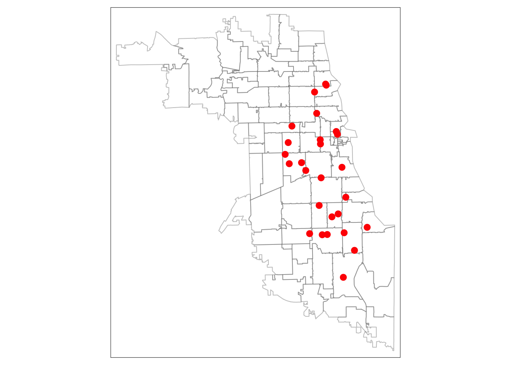
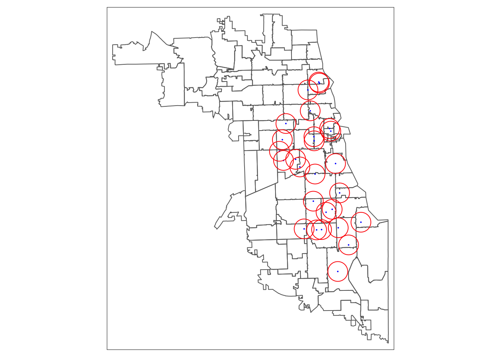

1 Buffer Analysis
1.1 Overview
Once we have Our objectives are thus to:
1.2 Environment Setup
To replicate the code & functions illustrated in this tutorial, you’ll need to have R and RStudio downloaded and installed on your system. This tutorial assumes some familiarity with the R programming language.
1.2.1 Load Libraries
We will use the following packages in this tutorial:
sf: to manipulate spatial datatmap: to visualize and create mapstidygeocoder: to convert addresses to geographic coordinates
First, load the required libraries.
## Linking to GEOS 3.7.2, GDAL 2.4.2, PROJ 5.2.01.2.2 Load Data
We will use the shapefile of spatially enabled resource data, methadoneClinics.shp, generated from our previous tutorial. A copy of the shapefile can also be found here, but note that all four files are required (.dbf, .prj, .shp, and .shx) to consitute a shapefile. As a reminder, this shapefile includes methadone clinics in Chicago as our working example.
If you don’t have a shapefile of your data, but already have geographic coordinates as two columns in your CSV file, you can still use this tutorial. A reminder of how to transform your CSV with coordinates into a spatial data frame in R can be found here.
First, load in the MOUD resources shapefile. Let’s take a look at the first few rows of the dataset.
## Reading layer `methadoneClinics' from data source `/Users/maryniakolak/code/opioid-environment-toolkit/methadoneClinics.shp' using driver `ESRI Shapefile'
## Simple feature collection with 27 features and 8 fields
## geometry type: POINT
## dimension: XY
## bbox: xmin: -87.7349 ymin: 41.68698 xmax: -87.57673 ymax: 41.96475
## CRS: 4326## Simple feature collection with 6 features and 8 fields
## geometry type: POINT
## dimension: XY
## bbox: xmin: -87.67818 ymin: 41.89268 xmax: -87.63409 ymax: 41.96475
## CRS: 4326
## X Name
## 1 1 Chicago Treatment and Counseling Center, Inc.
## 2 2 Sundace Methadone Treatment Center, LLC
## 3 3 Soft Landing Interventions/DBA Symetria Recovery of Lakeview
## 4 4 PDSSC - Chicago, Inc.
## 5 5 Center for Addictive Problems, Inc.
## 6 6 Family Guidance Centers, Inc.
## Address City State Zip
## 1 4453 North Broadway st. Chicago IL 60640
## 2 4545 North Broadway St. Chicago IL 60640
## 3 3934 N. Lincoln Ave. Chicago IL 60613
## 4 2260 N. Elston Ave. Chicago IL 60614
## 5 609 N. Wells St. Chicago IL 60654
## 6 310 W. Chicago Ave. Chicago IL 60654
## fullAdd geo_method
## 1 4453 North Broadway st. Chicago IL 60640 osm
## 2 4545 North Broadway St. Chicago IL 60640 osm
## 3 3934 N. Lincoln Ave. Chicago IL 60613 census
## 4 2260 N. Elston Ave. Chicago IL 60614 census
## 5 609 N. Wells St. Chicago IL 60654 census
## 6 310 W. Chicago Ave. Chicago IL 60654 census
## geometry
## 1 POINT (-87.65566 41.96321)
## 2 POINT (-87.65694 41.96475)
## 3 POINT (-87.67818 41.95331)
## 4 POINT (-87.67407 41.92269)
## 5 POINT (-87.63409 41.89268)
## 6 POINT (-87.63636 41.89657)Next, we load a shapefile of Chicago community areas. You can often find shapefiles (or spatial data formats like geojson) on city data portals for direct download. In our case, we used the data provided on the City of Chicago Data Portal, though we will walk you through downloading zip code boundaries directly through the Census via R in a later tutorial.
## Reading layer `geo_export_8027c825-e55a-4218-aac1-2d7676ad1b47' from data source `/Users/maryniakolak/code/opioid-environment-toolkit/data/geo_export_8027c825-e55a-4218-aac1-2d7676ad1b47.shp' using driver `ESRI Shapefile'
## Simple feature collection with 77 features and 9 fields
## geometry type: MULTIPOLYGON
## dimension: XY
## bbox: xmin: -87.94011 ymin: 41.64454 xmax: -87.52414 ymax: 42.02304
## CRS: 4326## Simple feature collection with 6 features and 9 fields
## geometry type: MULTIPOLYGON
## dimension: XY
## bbox: xmin: -87.7069 ymin: 41.79448 xmax: -87.58001 ymax: 41.99076
## CRS: 4326
## area area_num_1 area_numbe comarea comarea_id community perimeter
## 1 0 35 35 0 0 DOUGLAS 0
## 2 0 36 36 0 0 OAKLAND 0
## 3 0 37 37 0 0 FULLER PARK 0
## 4 0 38 38 0 0 GRAND BOULEVARD 0
## 5 0 39 39 0 0 KENWOOD 0
## 6 0 4 4 0 0 LINCOLN SQUARE 0
## shape_area shape_len geometry
## 1 46004621 31027.05 MULTIPOLYGON (((-87.60914 4...
## 2 16913961 19565.51 MULTIPOLYGON (((-87.59215 4...
## 3 19916705 25339.09 MULTIPOLYGON (((-87.6288 41...
## 4 48492503 28196.84 MULTIPOLYGON (((-87.60671 4...
## 5 29071742 23325.17 MULTIPOLYGON (((-87.59215 4...
## 6 71352328 36624.60 MULTIPOLYGON (((-87.67441 4...1.3 Simple Overlay Map
We can plot these quickly using the tmap library to ensure they are overlaying correctly. If they are, our coordinate systems are working correctly.
When using tmap the first parameter references the spatial file we’d like to map (tm_shape), and the next parameter(s) indicate how we want to style the data. For polygons, we can style tm_borders to have a slightly transparent boundary. For the point data, we will use red dots that are sized appropriately using the tm_dots parameter. When working with tmap or any other library for the first time, it’s helpful to review the documentation and related tutorials for more tips on usability.
## 1st layer (gets plotted first)
tm_shape(Areas) + tm_borders(alpha = 0.4) +
## 2nd layer (overlay)
tm_shape(MetClinics) + tm_dots(size = 0.4, col="red") 
1.4 Spatial Transformation
Next, we check the Coordinate Reference System for our data. Are the coordinate systems for clinic points and community areas the same? For R to treat both coordinate reference systems the same, the metadata has to be exact.
## Coordinate Reference System:
## User input: 4326
## wkt:
## GEOGCS["WGS 84",
## DATUM["WGS_1984",
## SPHEROID["WGS 84",6378137,298.257223563,
## AUTHORITY["EPSG","7030"]],
## AUTHORITY["EPSG","6326"]],
## PRIMEM["Greenwich",0,
## AUTHORITY["EPSG","8901"]],
## UNIT["degree",0.0174532925199433,
## AUTHORITY["EPSG","9122"]],
## AUTHORITY["EPSG","4326"]]## Coordinate Reference System:
## User input: 4326
## wkt:
## GEOGCS["WGS84(DD)",
## DATUM["WGS84",
## SPHEROID["WGS84",6378137.0,298.257223563]],
## PRIMEM["Greenwich",0.0],
## UNIT["degree",0.017453292519943295],
## AXIS["Geodetic longitude",EAST],
## AXIS["Geodetic latitude",NORTH]]We can see that while both have a code of 4326 and appear to both be WGS84 systems, they are not encoded in exactly the same why. Thus, R will treat them differently – which will pose problems for spatial analysis that interacts these two layers. One way of resolving this challenge is to transform the spatial reference system so that they are exact.
To complicate matters, we are also interested in generating a buffer to approximate a “service”area" around each methadone provider. If we want to use a buffer of two miles, we will need to use a spatial data reference system that uses an appropriate distance metric, like feet or meters. As noted in the previous tutorial the WGS84 coordinate reference system uses degrees, and is not an appropriate CRS for the spatial analysis we require.
Thus, our next goal is to transform both spatial data files into a new, standardized CRS.
1.4.1 Transform CRS
To calculate buffers, we will need to conver to a different CRS that preserves distance. Trying using a search engine like Google with search terms “CRS Illinois ft”, for example, to look for a code that provides what we need. After searching, we found EPSG:3435 that uses feet for a distance metric. We’ll use that!
First, set a new CRS.
Next, transform both datasets to your new CRS.
Check the CRS of both datasets again. If they are identical you’re ready to move onto the next step!
1.5 Generate Buffers
Inspect the structure of the object you just created. Note that this is a new data object, represented as a polygon. Each buffer around each point is a separate entity.
1.5.1 Visualize buffers
# Map in tmap
tm_shape(Areas.3435) + tm_borders() +
tm_shape(MetClinics.3435) + tm_dots(col = "blue") +
tm_shape(MetClinic_buffers) + tm_borders(col = "red") 